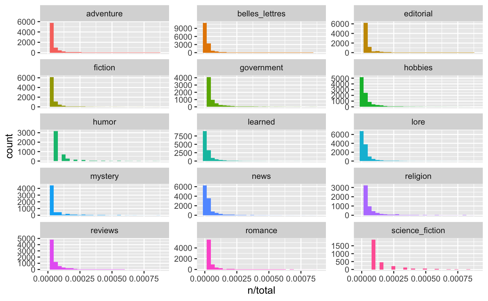
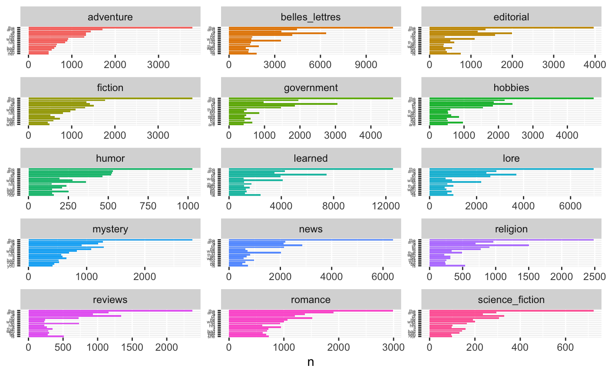
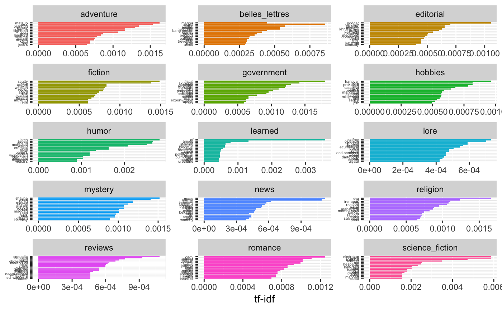
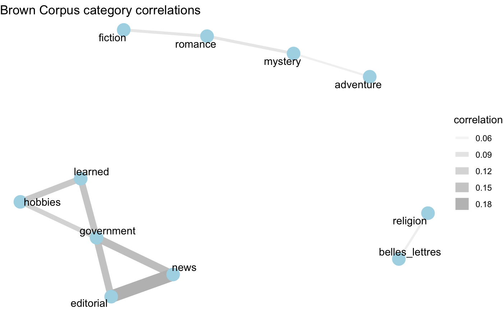

vignettes/analysis-an-exploratory-example.Rmd
analysis-an-exploratory-example.RmdA common task in text analysis is to explore the distribution of words (or terms) in a text collection. There are a number of ways in which a research can operationalize frequency which can change the results quite dramatically. In this case study, I will demonstrate the difference between two frequency measures: raw counts (n) and Term-weighted Inverse Document Frequency (tf-idf). I will use the later to explore the similarity between written genres (categories) in the Brown Corpus of Written American English.
Let’s access a curated version of this data through the analyzr package. First, install and load the package, and the main tidyverse tools.
library(tidyverse)
#> ── Attaching packages ───────────────────────────────────────────────────────────────────── tidyverse 1.2.1 ──
#> ✔ ggplot2 3.1.0 ✔ purrr 0.3.0
#> ✔ tibble 2.0.1 ✔ dplyr 0.7.8
#> ✔ tidyr 0.8.2 ✔ stringr 1.3.1
#> ✔ readr 1.3.1 ✔ forcats 0.3.0
#> Warning: package 'tibble' was built under R version 3.5.2
#> Warning: package 'purrr' was built under R version 3.5.2
#> ── Conflicts ──────────────────────────────────────────────────────────────────────── tidyverse_conflicts() ──
#> ✖ dplyr::filter() masks stats::filter()
#> ✖ dplyr::lag() masks stats::lag()
library(tidytext)
library(analyzr)Let’s take a look at the brown_words dataset.
glimpse(brown_words)
#> Observations: 1,004,082
#> Variables: 4
#> $ doc_id <chr> "ca01", "ca01", "ca01", "ca01", "ca01", "ca01", "ca01",…
#> $ category <chr> "news", "news", "news", "news", "news", "news", "news",…
#> $ word <chr> "the", "fulton", "county", "grand", "jury", "said", "fr…
#> $ tag <chr> "at", "np-tl", "nn-tl", "jj-tl", "nn-tl", "vbd", "nr", …To find out more about the data we can look at the data dictionary provided in the analyzr package with ?brown.
The first step will be to calculate the relevant frequency metrics. Each of our measures will be grouped by category to highlight the similarity and difference between each.
brown_category_words <- # word counts by category
brown_words %>%
group_by(category, word) %>%
count(sort = TRUE) %>%
ungroup()
brown_total_words <- # calculate total words per category
brown_category_words %>%
group_by(category) %>%
summarise(total = sum(n))
# Add `total` to `brown_category_words`
brown_category_words <- left_join(brown_category_words, brown_total_words)
#> Joining, by = "category"
# Observe the natural skew of word frequency distributions
brown_category_words %>%
ggplot(aes(n/total, fill = category)) +
geom_histogram(show.legend = FALSE) +
xlim(NA, .0009) +
facet_wrap(~category, ncol = 3, scales = "free_y")
#> `stat_bin()` using `bins = 30`. Pick better value with `binwidth`.
#> Warning: Removed 1749 rows containing non-finite values (stat_bin).
#> Warning: Removed 15 rows containing missing values (geom_bar).
# Observe the top 15 most frequent words in each category
brown_category_words %>%
arrange(category, desc(n)) %>%
mutate(word = factor(word, levels = rev(unique(word)))) %>%
group_by(category) %>%
top_n(15, n) %>%
ungroup() %>%
ggplot(aes(word, n, fill = category)) +
geom_col(show.legend = FALSE) +
labs(x = NULL, y = "n") +
theme(axis.text.y = element_text(size = 4)) +
facet_wrap(~category, ncol = 3, scales = "free") +
coord_flip()
As we can see the most frequent words, in terms of number of occurrences is very similar between the categories. This is very much expected as natural language tends to show a striking leftward skew in frequency counts with primarily grammatical words forming the majority of word tokens in any (sizable) corpus. To distinguish between the words the form the scaffolding of language (grammatical) and words of importance (content), we will use the Term-weighted Inverse Document Frequency (tf-idf). This measure takes into the account the overall distribution across documents within a category weighting those terms that occur in many documents within a category (such as those in the above raw frequency plot) lower. On the whole, this measure attempts to strikes a balance between common grammatical terms and content terms.
brown_category_freq <- # calculate the tf-idf measure
brown_category_words %>%
bind_tf_idf(word, category, n) %>%
arrange(category, desc(tf_idf)) %>%
ungroup()
brown_category_freq # View
#> # A tibble: 135,497 x 7
#> category word n total tf idf tf_idf
#> <chr> <chr> <int> <int> <dbl> <dbl> <dbl>
#> 1 adventure matsuo 35 58347 0.000600 2.71 0.00162
#> 2 adventure jess 33 58347 0.000566 2.71 0.00153
#> 3 adventure brannon 29 58347 0.000497 2.71 0.00135
#> 4 adventure ramey 28 58347 0.000480 2.71 0.00130
#> 5 adventure barton 25 58347 0.000428 2.71 0.00116
#> 6 adventure tilghman 25 58347 0.000428 2.71 0.00116
#> 7 adventure curt 31 58347 0.000531 2.01 0.00107
#> 8 adventure greg 25 58347 0.000428 2.01 0.000863
#> 9 adventure langford 18 58347 0.000308 2.71 0.000835
#> 10 adventure lalaurie 17 58347 0.000291 2.71 0.000789
#> # … with 135,487 more rows
# Plot the 15 most important terms (tf-idf) for each category
brown_category_freq %>%
arrange(desc(tf_idf)) %>%
mutate(word = factor(word, levels = rev(unique(word)))) %>%
group_by(category) %>%
top_n(15, tf_idf) %>%
ungroup() %>%
ggplot(aes(word, tf_idf, fill = category)) +
geom_col(show.legend = FALSE) +
labs(x = NULL, y = "tf-idf") +
theme(axis.text.y = element_text(size = 4)) +
facet_wrap(~category, ncol = 3, scales = "free") +
coord_flip()
Now that we have a measure which helps us get at the content of the categories, let’s now find out which categories tend to be similar to each other in text content. We will want to find the pairwise corrlation between the word frequencies and categories. The widyr package provides a key function for this task pairwise_cor(). We will use the tf_idf score to focus in on the distribution of words from a importance-based perspective.
library(widyr)
brown_category_cor <-
brown_category_freq %>%
pairwise_cor(category, word, tf_idf)
brown_category_cor # View the cateogory-category correlation coefficients
#> # A tibble: 210 x 3
#> item1 item2 correlation
#> <chr> <chr> <dbl>
#> 1 belles_lettres adventure -0.0225
#> 2 editorial adventure -0.0236
#> 3 fiction adventure 0.0431
#> 4 government adventure -0.0249
#> 5 hobbies adventure -0.0124
#> 6 humor adventure -0.00166
#> 7 learned adventure -0.0330
#> 8 lore adventure -0.00805
#> 9 mystery adventure 0.0538
#> 10 news adventure -0.0169
#> # … with 200 more rowsTo appreciate the relationships between the categories, we will plot a network graph. This requires packages for visualizing networks ggraph and igraph.
library(ggraph)
library(igraph)
#>
#> Attaching package: 'igraph'
#> The following objects are masked from 'package:dplyr':
#>
#> as_data_frame, groups, union
#> The following objects are masked from 'package:purrr':
#>
#> compose, simplify
#> The following object is masked from 'package:tidyr':
#>
#> crossing
#> The following object is masked from 'package:tibble':
#>
#> as_data_frame
#> The following objects are masked from 'package:stats':
#>
#> decompose, spectrum
#> The following object is masked from 'package:base':
#>
#> union
set.seed(1234) # make the network graph reproducible
brown_category_cor %>%
filter(correlation > .05) %>% # set a minimal threshold on correlation
graph_from_data_frame() %>%
ggraph(layout = "fr") +
geom_edge_link(aes(alpha = correlation, width = correlation), color = "grey") +
geom_node_point(size = 6, color = "lightblue") +
geom_node_text(aes(label = name), repel = TRUE) +
labs(title = "Brown Corpus category correlations") +
theme_void()